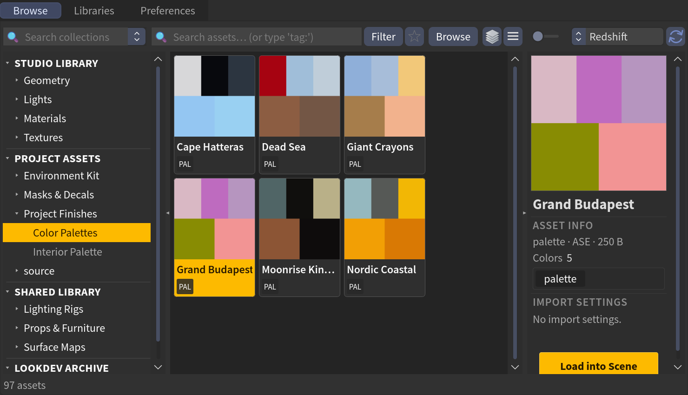
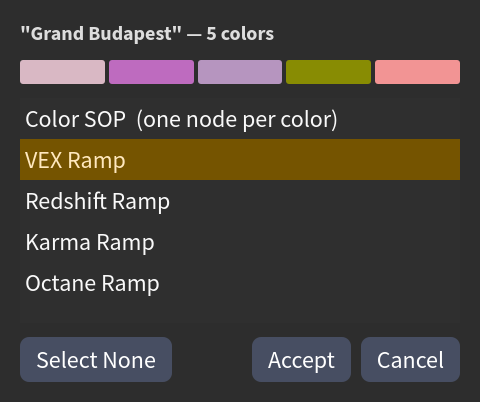

Color palettes
A color palette is a swatch file — the kind you export from Photoshop, Procreate, Coolors, or a brand style guide. JElib reads it, shows it as a swatch grid in the browser. You can then import the colors as regular Color SOPs or as ramps (VEX, Karma, Redshift, Octane).
Adding palettes
Drop swatch files into any folder JElib scans and they show up, badged PAL with a swatch-grid thumbnail.

Supported files:
| Format | Extension |
|---|---|
| Adobe Swatch Exchange | .ase |
| GIMP palette | .gpl |
| Photoshop swatches | .aco |
| Procreate swatches | .swatches |
| Plain hex list | .txt (only if the name contains palette, colors, swatch, pantone, hex…) |
Adding a file to a scanned folder is all it takes — or save one straight from the scene, see Saving a palette below.
RGB swatches only
JElib reads RGB colors from .ase/.aco files; swatches authored in CMYK, LAB,
or grayscale are skipped.
Importing a palette
A palette isn't a finished material — it's a building block. Drag one in (or Load into Scene) and JElib asks how you want it, via the Load Palette dialog — one of five outputs:

| Output | What you get |
|---|---|
| Color SOP (one node per color) | a color SOP per swatch — good for assigning flat colors to geo |
| VEX Ramp (default) | an attribwrangle with a color ramp driving @Cd |
| Redshift Ramp | an RSRamp gradient node |
| Karma Ramp | a kma_rampconst gradient node |
| Octane Ramp | an octane gradient node |
The three renderer ramps are created inside a matnet named color_palette, ready
to plug into a shader as a color source. You can build any of them whatever your
active renderer is — the choice decides the node, not the scene.
Apply straight to a ramp you already have
Select a single supported ramp node first — an RSRamp, Karma ramp, Octane gradient, a Color SOP in Ramp from Attribute mode, or an attribwrangle with a color ramp — then load the palette. JElib skips the dialog and writes the colors straight into that node.
Inside a material builder (a Redshift or Octane vopnet, a USD material builder, or a MaterialX subnet in a Material Library) there's no dialog either: JElib creates that renderer's ramp right there in the builder.
How the colors map
Each swatch becomes one ramp key, in file order, evenly spaced across the ramp with linear interpolation — so you get a smooth gradient between colors, not hard bands. There's no limit on the number of colors.
Colors are converted to ACEScg for the Color SOP, VEX, Redshift, and Karma outputs; the Octane output uses linear sRGB.
The preview panel shows a Colors: N count for a selected palette. The material and geometry import toggles (Material Only, LOD, and so on) don't apply to palettes.
Saving a palette
Palettes go the other way too. Select ramp nodes or Color SOPs and save them like
any other node setup — right-click → Save Asset [JE], or drag them onto a folder
in the nav tree or onto the grid (see Save to the browser). When
every selected node is a Color SOP or a supported ramp — an RSRamp, Karma ramp,
Octane gradient, or an attribwrangle with a color ramp — JElib writes an .ase
swatch file instead of a node asset. It appears as a palette card right away, loads
into any of the five outputs, and opens in Photoshop or Illustrator.
- A ramp becomes one swatch per key, in ramp order, named
<node>_01,<node>_02, … Key positions aren't kept — a palette is an ordered list, and loading it back spaces the colors evenly. - A Color SOP set to Constant becomes one swatch, named after the node; set to Ramp from Attribute its ramp is saved like any other ramp. The other Color Types have no color of their own, so a selection containing one is saved as a node asset instead.
- A key hidden under another key at the very start or end of a ramp (an RSRamp's default black and white, say, with your own keys dragged on top) isn't part of the gradient you see, so it isn't saved either.
- Colors are converted back from ACEScg to sRGB (Octane gradients from linear sRGB), the reverse of loading. A swatch file is 8-bit sRGB, so a color outside the sRGB gamut is clipped on the way out.
Mix in anything else — a box, a subnet, a shader — and the selection is saved as a regular node asset instead. Nothing asks; the nodes decide.